CITI / JPM Relative-Value, Credit & Portfolio Dashboard
1. Executive portfolio view
20-observation signal-day average gross return is -3.63 bp with a 38.1% convergence hit rate; mean reversion is not supported.
2. Investment idea
Research question
CITI and JPM are comparable large-bank senior fixed-to-floating bonds. The question is not whether their spreads are identical, but whether the observed CITI−JPM differential is large enough relative to history, fundamentals, risk and implementation cost to justify a position.
Decision chain
3. Fundamental credit
The latest disclosed 2Q26 issuer fundamentals provide a credit-quality check before a relative-value signal is considered investable.
| Area | Metric | CITI | JPM | Definition / note |
|---|---|---|---|---|
| Capital | CET1 ratio | 12.80% | 14.10% | Standardized approach |
| Earnings | RoTCE | 13.00% | 29.00% | JPM reported RoTCE; 2Q26 included significant Corporate gains |
| Earnings | Net income | $5.8bn | $21.2bn | Quarterly |
| Earnings | Net interest income | $17.1bn | $25.5bn | Reported firmwide NII |
| Scale / Funding | Total assets | $2.89tn | $5.02tn | Period-end |
| Scale / Funding | Total loans | $793.7bn | $1,542.5bn | Period-end |
| Scale / Funding | Total deposits | $1,492.6bn | $2,713.7bn | Period-end |
| Asset quality | Net charge-off rate | 1.23% | 0.66% | Citi total average loans; JPM total retained loans |
| Asset quality | Nonaccrual loans / total loans | 0.41% | 0.61% | Period-end |
| Asset quality | Allowance / loans | 2.54% | 1.79% | Citi ACLL / loans; JPM allowance / retained loans |
4. Market valuation
| Issuer | Price | YTC | Matched Treasury | YTC−Treasury | Duration to call | DV01 | CS01 | Volume / 20-obs median |
|---|---|---|---|---|---|---|---|---|
| CITI | 97.987 | 4.8149% | 4.2252% | 58.97 bp | 2.387 | $2,339 | $2,339 | 32.26x |
| JPM | 93.853 | 4.8607% | 4.2604% | 60.04 bp | 2.942 | $2,761 | $2,761 | 1.69x |
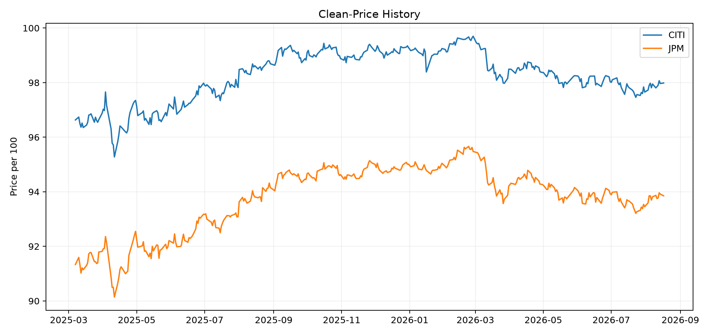
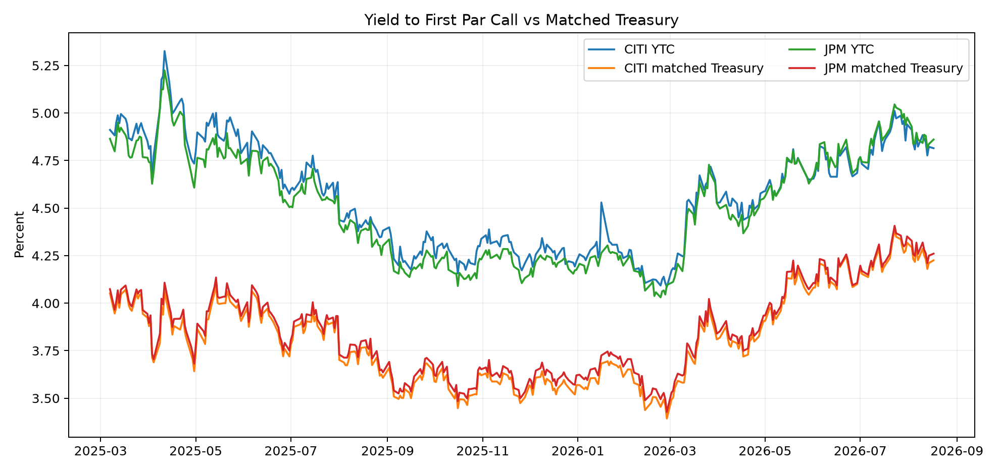
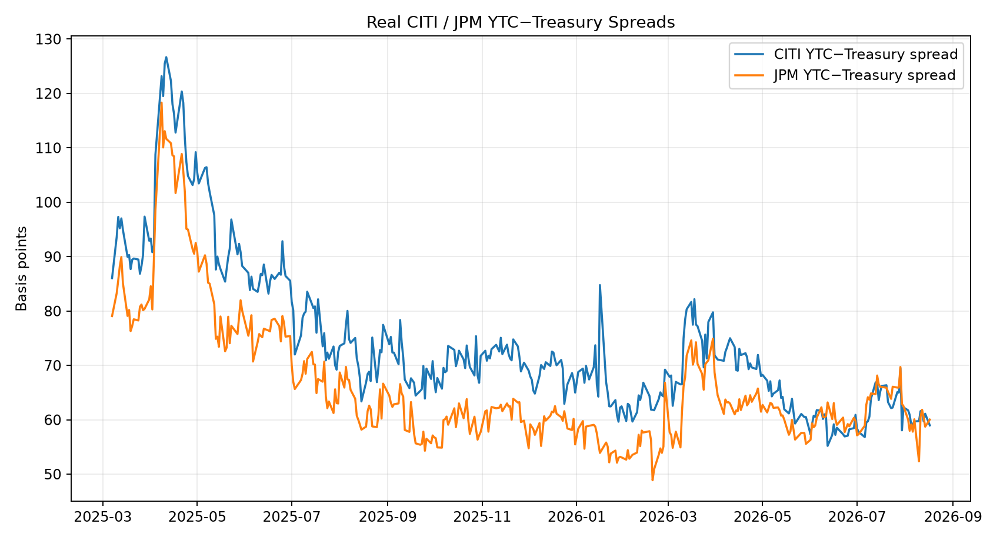
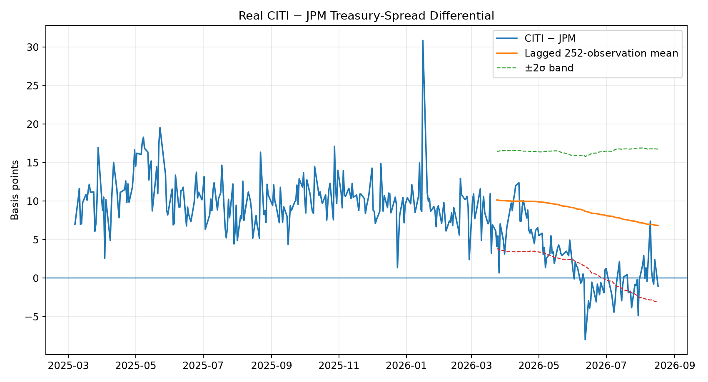
5. Relative value
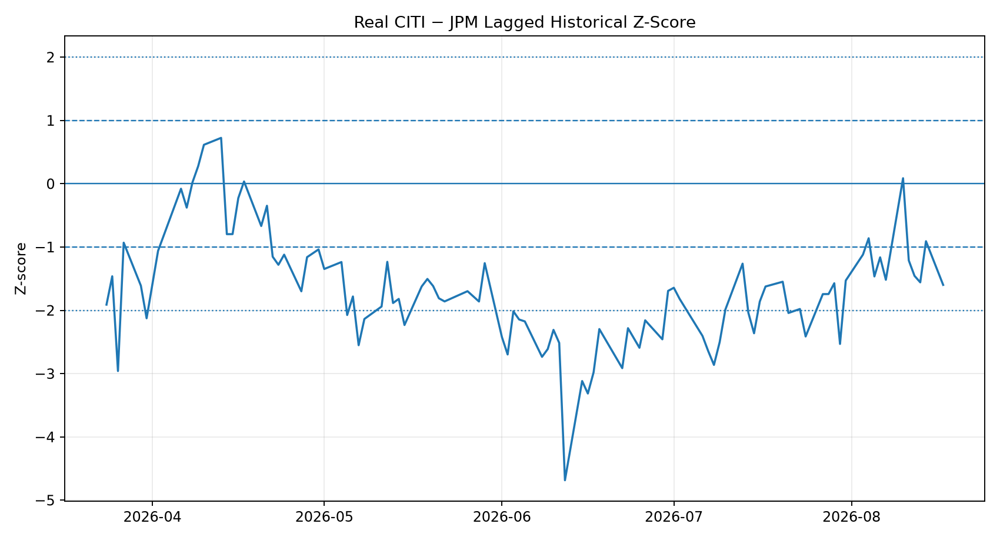
6. Risk-factor decomposition
The latest yield change is decomposed as Rates + Systematic Credit + Liquidity + Idiosyncratic Credit. The systematic credit term is estimated from the ICE BofA US Corporate Index OAS obtained through FRED, using only trailing observations for the regression coefficients.
| Issuer | ΔYTC | Rates | Systematic credit | Liquidity | Idiosyncratic credit | ΔSpread |
|---|---|---|---|---|---|---|
| CITI | -0.75 bp | 1.39 bp | 1.11 bp | -0.06 bp | -3.19 bp | -2.15 bp |
| JPM | 2.37 bp | 1.06 bp | 1.08 bp | 0.11 bp | 0.12 bp | 1.31 bp |
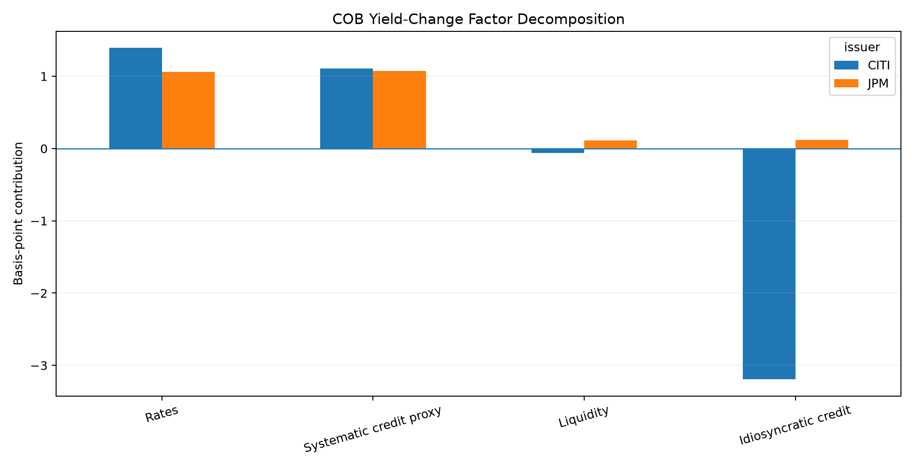
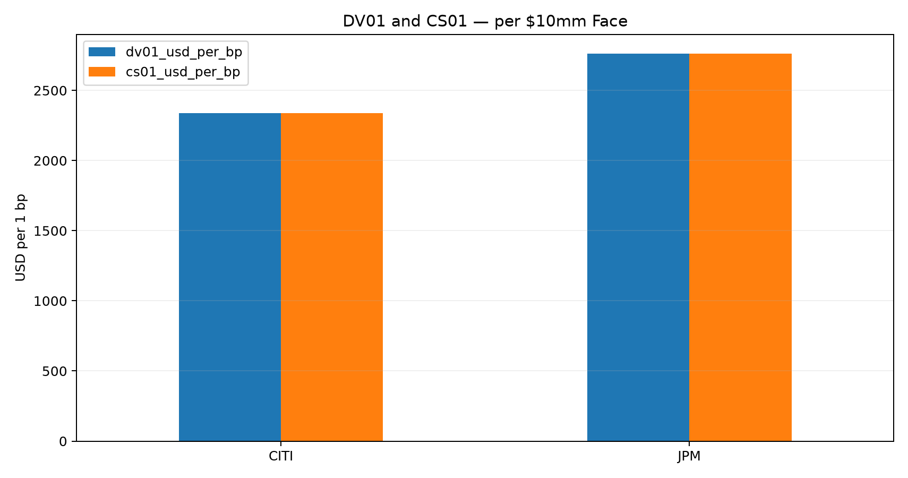
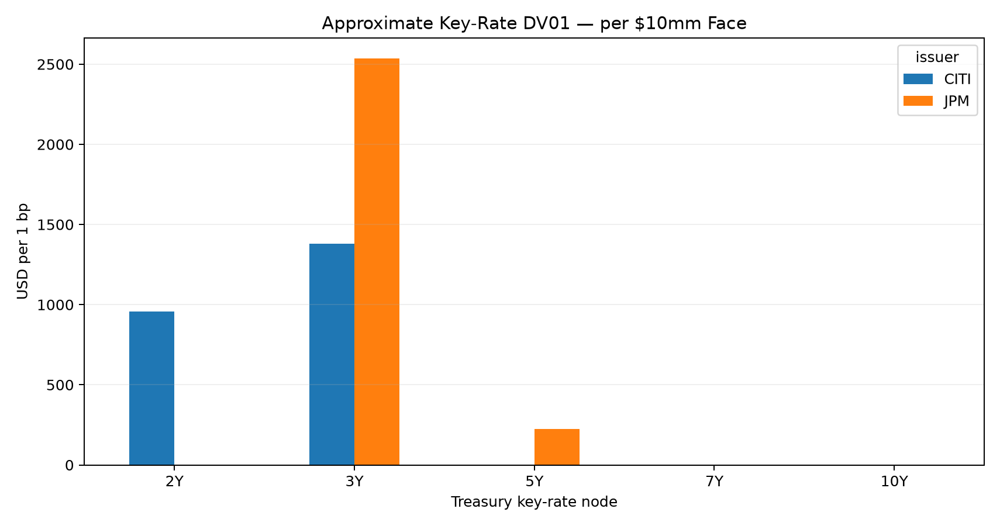
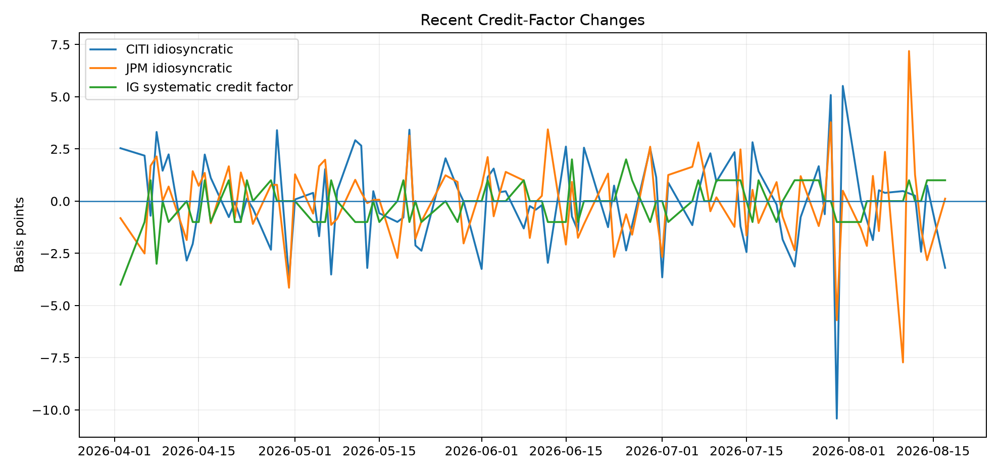
Issuer-level first-order P&L explain
| Issuer | Rates | Systematic credit | Liquidity | Idiosyncratic | Factor total | Observed clean-price P&L | Residual |
|---|---|---|---|---|---|---|---|
| CITI | $-3,262 | $-2,596 | $139 | $7,478 | $1,760 | $2,000 | $240 |
| JPM | $-2,941 | $-2,978 | $-315 | $-326 | $-6,561 | $-6,119 | $442 |
7. Historical validation
| Horizon | Signal observations | Avg signed convergence | Hit rate | Avg gross return estimate |
|---|---|---|---|---|
| 5 obs | 76 | 0.14 bp | 43.4% | 0.39 bp |
| 20 obs | 63 | -1.23 bp | 38.1% | -3.63 bp |
| 60 obs | 23 | -4.42 bp | 4.3% | -13.15 bp |
Independent-event backtest
| Horizon | Events | Gross hit rate | Avg gross return | Avg net return | Net-positive rate |
|---|---|---|---|---|---|
| 5 obs | 3 | 33.3% | -0.78 bp | -8.78 bp | 0.0% |
| 20 obs | 1 | 100.0% | 5.26 bp | -2.74 bp | 0.0% |
| 60 obs | 1 | 0.0% | -18.98 bp | -26.98 bp | 0.0% |
8. Execution & liquidity
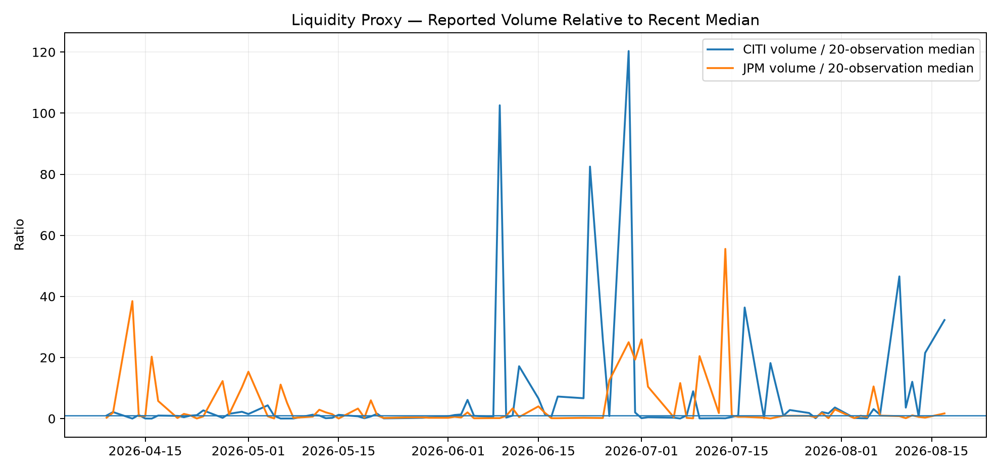
9. Portfolio impact
The section below sizes a $10.00mm CITI base leg and computes the JPM face required to make the reference pair approximately DV01-neutral. The reference sleeve of $100.00mm is used only to put the trade size in portfolio context.
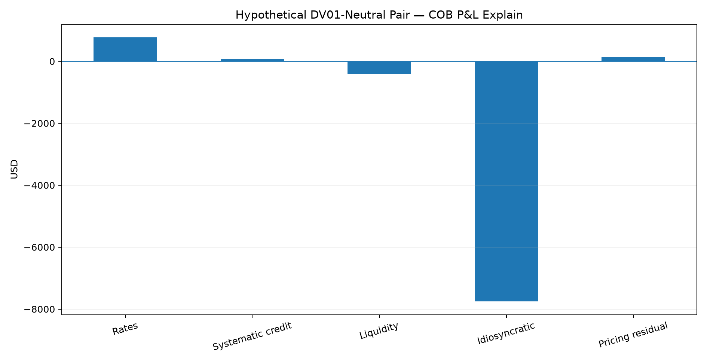
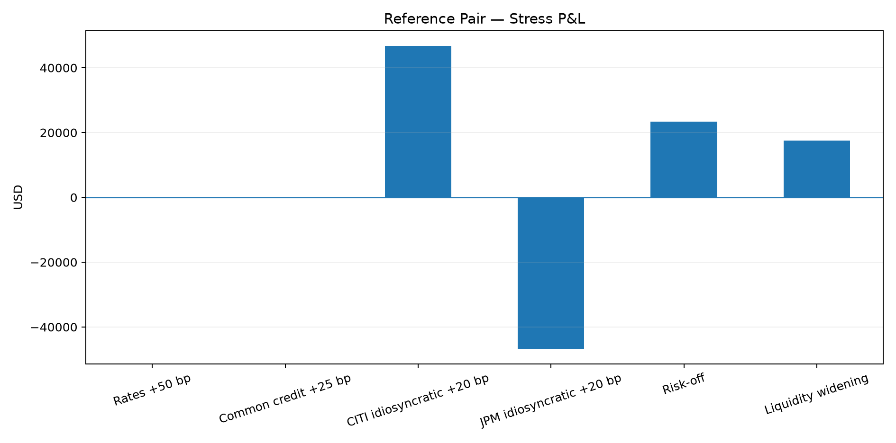
| Scenario | Rates | Common credit | CITI idio | JPM idio | CITI liquidity | JPM liquidity | Pair P&L |
|---|---|---|---|---|---|---|---|
| Rates +50 bp | 50.0 bp | 0.0 bp | 0.0 bp | 0.0 bp | 0.0 bp | 0.0 bp | $0 |
| Common credit +25 bp | 0.0 bp | 25.0 bp | 0.0 bp | 0.0 bp | 0.0 bp | 0.0 bp | $0 |
| CITI idiosyncratic +20 bp | 0.0 bp | 0.0 bp | 20.0 bp | 0.0 bp | 0.0 bp | 0.0 bp | $46,776 |
| JPM idiosyncratic +20 bp | 0.0 bp | 0.0 bp | 0.0 bp | 20.0 bp | 0.0 bp | 0.0 bp | $-46,776 |
| Risk-off | -25.0 bp | 40.0 bp | 15.0 bp | 10.0 bp | 10.0 bp | 5.0 bp | $23,388 |
| Liquidity widening | 0.0 bp | 0.0 bp | 0.0 bp | 0.0 bp | 15.0 bp | 7.5 bp | $17,541 |
10. PM decision
The dashboard separates a market signal from an investable decision. The current mean-reversion direction is Short CITI / Long JPM, but the validation and execution gates do not support implementation. The risk and portfolio sections therefore show the exposure that would be created if the trade were considered, rather than presenting it as an executed position.
Methodology & controls
Spread measure
The measure is not labeled OAS because the embedded call option is not separately valued.
Risk sensitivities
Spread duration is proxied by modified duration to first par call.
COB factor identity
The systematic term uses the ICE BofA US Corporate Index OAS via FRED. Liquidity is a lagged regression contribution using the available FINRA reported-volume field.
First-order P&L
A pricing residual is retained rather than forcing the approximation to equal observed clean-price P&L.